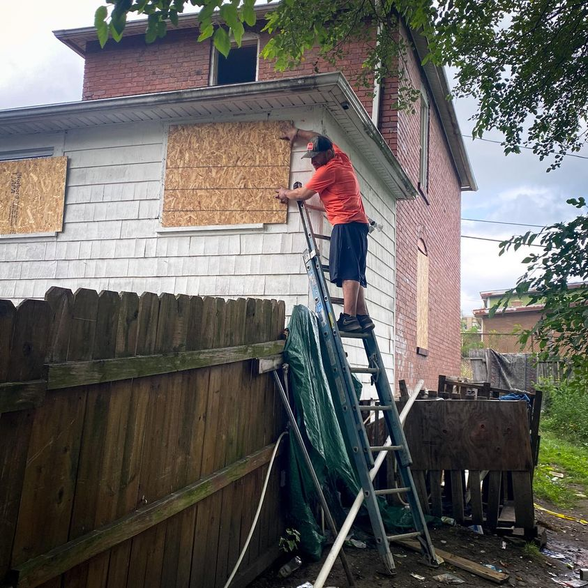

Timeline photos
This is Josh.
Every day I come to our house he asks to use my truck to run scrap to the scrapyard. He ALWAYS wants to work for me. I hired him yesterday to help finish boarding up our house.
He has lived in our garage for years.
You might think that’s a “terrible” way to live. Except when you learn that his 2 brothers have spent their entire lives in prison.
Their parents were drug addicts and these boys had to make their own way to survive. Their parents are both dead now. They have no other family.
Josh is doing REALLY well given the circumstances. He’s an incredibly hard worker. He’s kind and polite and is quiet. You barely know he is there.
His garage is gone now. He has nowhere to live.
These are really high risk times for a guy like Josh. When your life is in free fall addiction and criminal activity usually increase.
I feel pretty confident it’s all designed this way. A guy like Josh living in a garage makes no money for the capitalists. Josh in jail or prison is suddenly a profit center.
The entire system incentivizes cops to “find” criminals, judges to be “tough on crime” and then prisons can make more money once the person is behind bars.
The United States has one of the highest recidivism rates in the world. According to the National Institute of Justice, almost 44% of criminals released return to prison within the first year out. 76.6% of prisoners are rearrested within five years.
We have figured out the best way to make poor people “productive” citizens. Put them in jail.